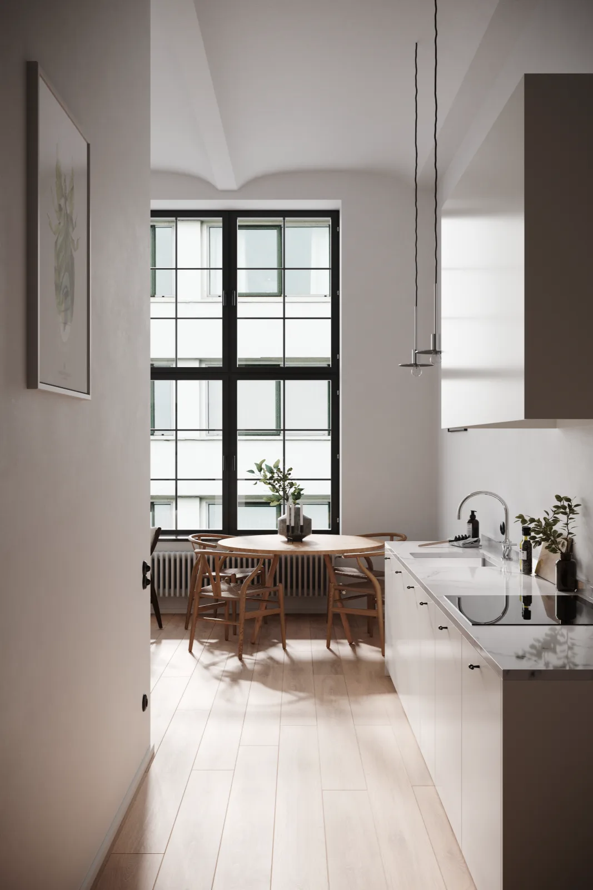
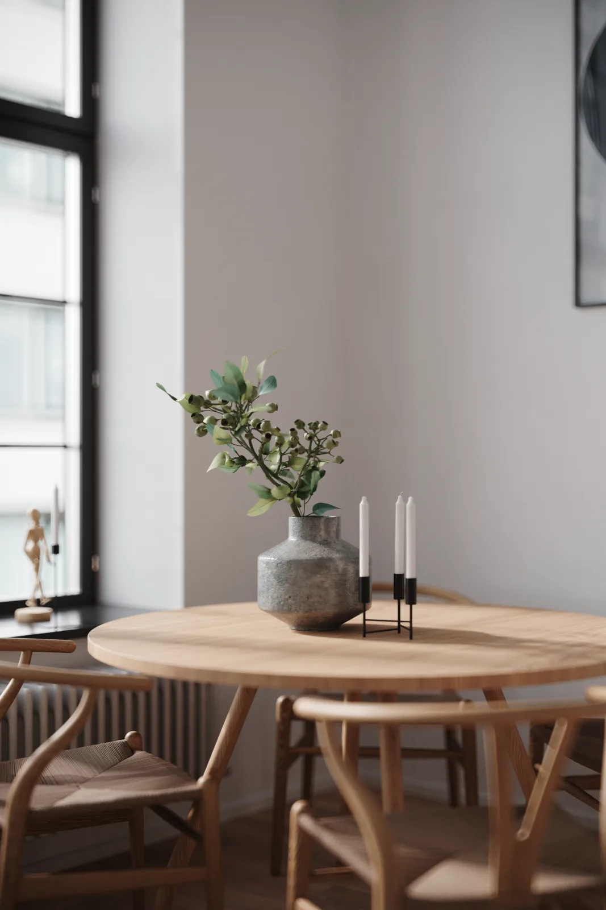
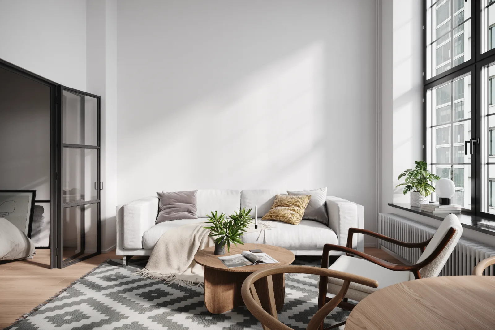

← Back to selected work
01 View full-size effect ↗02 
03 
04 View full-size effect ↗05 View full-size effect ↗06 
07 / Project overview
Interior & CGI
Interior Spaces & Atmosphere
Interior design and visualization studies exploring spatial layout, materials and natural light.
Project typeInterior & CGI
My contributionSpatial modeling / Rendering
ToolsSketchUp / 3ds Max / Photoshop
Project context
Interior work from the original portfolio, demonstrating spatial modeling, material coordination and rendered presentation.
What I did
- Built interior concept models around spatial functions.
- Adjusted materials, lighting and camera views to communicate atmosphere.
- Used rendered images to support design discussions and presentations.
Work & process
7 images · Click to enlarge
BeforeAfter


BeforeAfter
BeforeAfter
Contribution & credits
Interior visualization work combining space, materials and lighting.